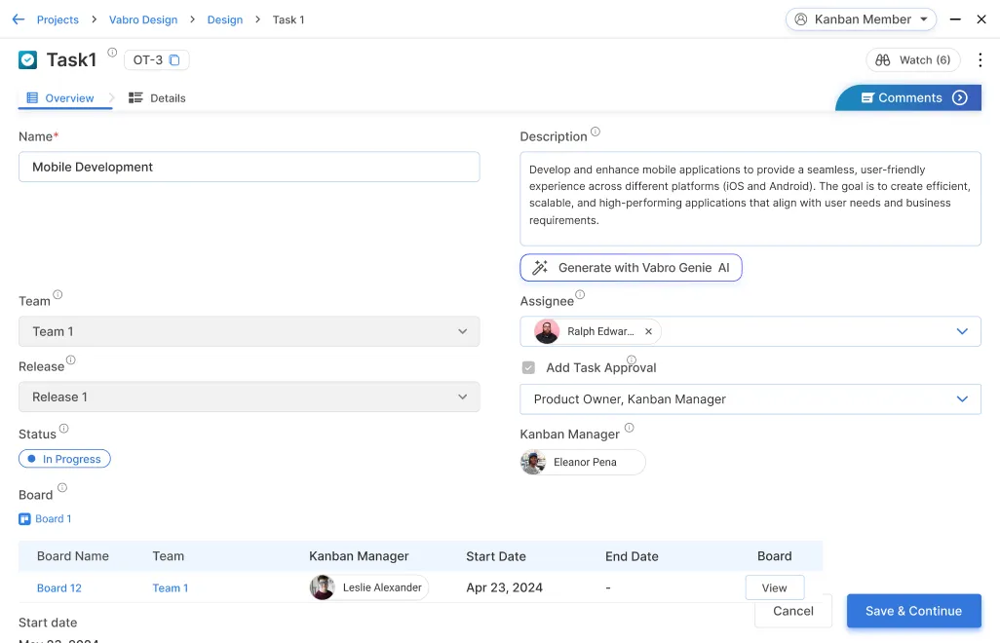
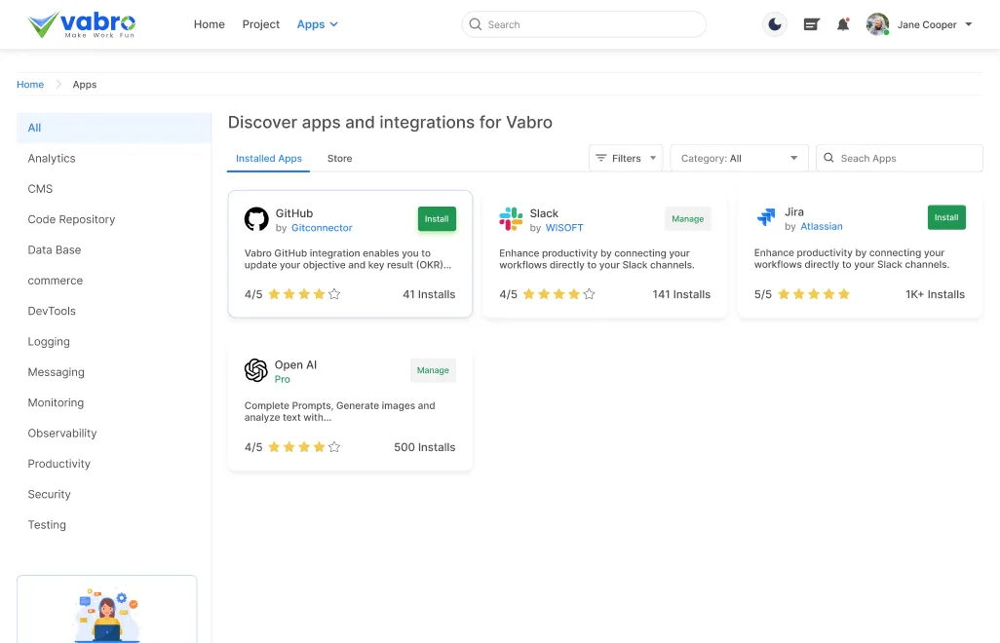

Create automated workflows in Vabro that mirror your CI/CD pipeline stages (e.g. Code, Build, Test, Deploy, Monitor).
Features forDevOps Frameworks
Workflow
Optimize task flow and boost productivity with seamless automation.
User Stories
Turn customer needs into actionable insights for focused development.
Prioritized Product Backlog
Prioritize, refine, and adapt work dynamically to keep teams focused.
Kanban Backlog
Keep tasks organized and prioritized for smooth project execution.
Kanban Board
Streamline workflows with flexible, visual task management.
Release
Ensure smooth, on-time product launches with robust release planning.
Task Groups
Organize tasks logically to streamline execution and enhance team efficiency.
Tasks
Track and complete actionable work items with precision and automation.
Reports
Gain actionable insights with real-time, data-driven reports.
Here's how you can use
Vabro for DevOps
Build a DevOps Pipeline in Vabro
Workflow Automation
Task Tracking
Use Vabro's task management features to track development tasks, operations requirements, and infrastructure changes in a unified system.
Facilitate Collaboration Between Dev and Ops
Shared Workspace

Create a common workspace in Vabro where developers and operations teams can collaborate, share information, and coordinate activities.
Cross-functional Visibility
Use Vabro's board views to give both development and operations teams visibility into each other's work and dependencies.
Implement Continuous Integration and Delivery
Integration with Source Control
If Vabro supports integrations, connect it with your source control systems (like Git) to automatically update task statuses when code is committed or merged.
Deployment Tracking
Create dedicated boards or views to track deployments, including pre-deployment checks, deployment status, and post-deployment monitoring.
Automate DevOps Processes
Automated Notifications
Configure Vabro to send automated alerts when critical events occur, such as failed tests, successful deployments, or system issues.
Status Updates
Set up rules that automatically update task statuses based on external triggers or time-based conditions.
Manage Infrastructure as Code
Infrastructure Documentation
Use Vabro to document infrastructure components, configurations, and dependencies.
Change Management

Track infrastructure changes and updates with detailed task descriptions and approval workflows.
Monitor and Log Management
Incident Tracking
Create a dedicated section in Vabro for tracking incidents, their resolution, and follow-up actions.
Performance Metrics
Use Vabro's forms and data fields to log and track performance metrics and system health indicators.
Support Continuous Feedback and Improvement
Retrospective Management
Use Vabro's forms and surveys to collect feedback after deployments or incidents to identify areas for improvement.
Knowledge Base
Build a knowledge repository within Vabro where teams can document best practices, solutions to common problems, and lessons learned.
Security Integration
Security Checks

Incorporate security validation steps into your workflow, ensuring that security considerations are addressed throughout the development lifecycle.
Compliance Tracking
Use Vabro to track compliance requirements and ensure that all regulatory standards are met before deployment.
Pros of Using Vabro for DevOps
Unified Platform
Provides a single platform for both development and operations teams to coordinate their activities.
Workflow Customization
Allows teams to create workflows that match their specific DevOps processes and requirements.
Task Visibility
Offers clear visibility into the status of development tasks, operational requirements, and deployments.
Automation Capabilities
Reduces manual work through automated workflows, notifications, and status updates.
Cons of Using Vabro for DevOps
Limited Technical Integration

Vabro may not offer the same level of technical integration with development and infrastructure tools as specialized DevOps platforms.
Manual Configuration Required
Significant setup and configuration might be needed to adapt Vabro for comprehensive DevOps processes.
Lacks Specialized Features
May not include built-in features like code quality analysis, containerization support, or environment provisioning that are standard in dedicated DevOps tools.
Cons of Using Vabro for DevOps
Vabro can serve as a valuable tool for supporting DevOps practices, particularly for teams that prioritize workflow customization, team collaboration, and process visibility. While it may not replace specialized DevOps tools for technical aspects like build automation or infrastructure provisioning, it can effectively coordinate the human elements of DevOps by facilitating communication between teams, tracking work across the development lifecycle, and automating key processes. For organizations looking to improve their DevOps practices with better visibility and coordination, Vabro offers a flexible foundation that can be tailored to align with DevOps principles.